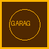

Internet Underground Music Archive
I-yoo-MAH · Independent music on the World Wide Web
http://www.iuma.com/ · est. 1993 at UC Santa Cruz
I-yoo-MAH · Independent music on the World Wide Web
http://www.iuma.com/ · est. 1993 at UC Santa Cruz
Choose a mode: [Graphical] | [dull text]
IUMA gives unsigned artists a place to distribute music outside the major-label system. Bands mail us tapes; we encode digital files (MPEG Layer II / “MP2”) and publish pages you can browse with Mosaic or Netscape.
Warning: Music files are large. A 2 MB song on a 14.4 kbps modem can take 20 minutes or more. Download responsibly — and tell your family you'll be on the phone line a while.
Playback uses a helper application (WinPlay / Xing-class for audio/x-mpeg). Netscape will download the file, then launch the helper — not stream like later years. Open any band → Download or Play (helper app) to try the theater.

Garage Orbit — Austin, TX · Garage rockIUMA founded by Rob Lord, Jeff Patterson, Jon Luini (UC Santa Cruz, 1993). Web presence by early 1994; CNN covered IUMA March 1994. Music archive preserved at Internet Archive.